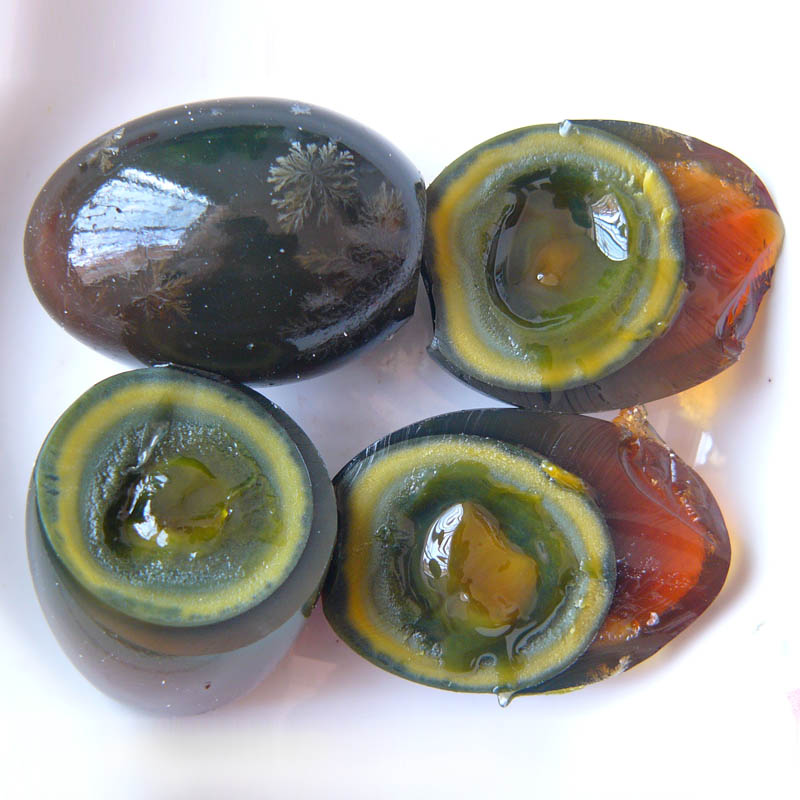
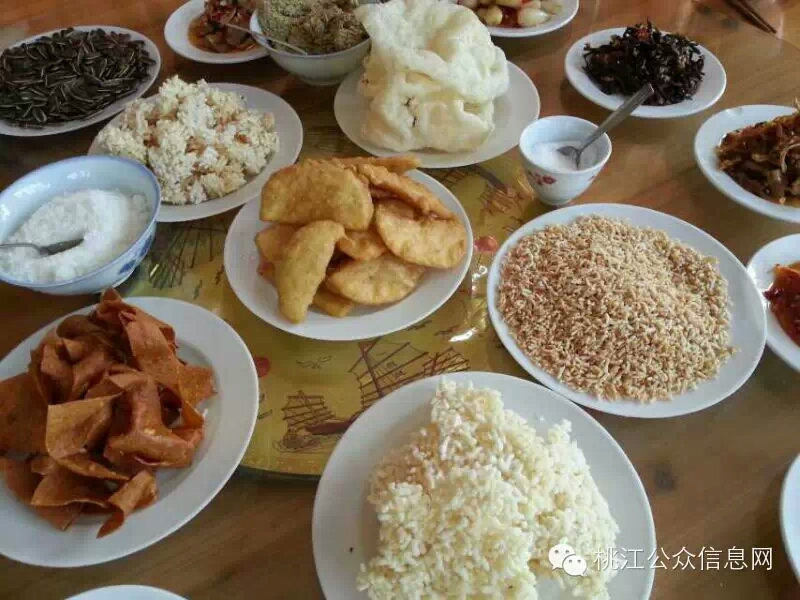

一起领略舌尖上的益阳
大通湖大闸蟹：为中国久负盛名的美食，其螯足用于取食和抗敌，掌部内外缘密生绒毛，绒螯蟹因此而得名。体圆膘厚，青背白腹，金爪黄毛。肉质膏腻，肢体矫健，置于玻璃板上，八足挺立，双螯腾空，威风凛凛。口感肉质细嫩、有弹性、香鲜甜美，膏黄丰腴细腻，味感丰富。
益阳松花皮蛋：据传已有500多年历史。剥开蛋壳，只见晶莹碧透的蛋白表层，松花朵朵，若隐若现，茶色蛋白，橙色蛋黄，如琥珀含珠。这就是以特有的东方食品风味，饮誉中外的益阳松花皮蛋。

安化黑茶：益阳市安化县特产，中国国家地理标志产品，是六大基本茶类之一，属于后发酵茶，主要产品以茯砖、黑砖、花砖、青砖、湘尖等产品为主，茶汤透明洁净，叶底形质轻新。香气浓郁清正，长久悠远沁心，茶香杂以药香果香草木香，运出资江一船香遍洞庭湖。
擂茶：以桃江绿茶、芝麻、花生、炒米、白糖或盐为原料，具清热消暑、补气养生之功效。做擂茶时，先将茶叶擂烂，次放芝麻、生姜、花生米，均擂成糨糊状，再用白糖开水调制而成，像豆浆、似乳汁，喝起来清凉可口，滋味甘醇，四季可饮，尤以暑季为盛。
